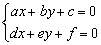
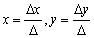
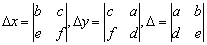
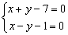
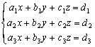
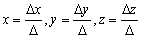
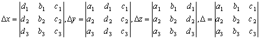
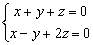

向量積
程式編寫日期: 2006年1月1日
這個程式可以用作計算下列的問題:
● 向量積 (Vector product)
● 純量三重積 (Scalar triple product)
● 向量三重積 (Vector triple product)
● 三階矩陣行列式 (3x3 Determinant)
● 三階伴隨矩陣及逆矩陣 (Adjoint and Inverse of 3×3 matrix)
● 聯立二元一次方程 (Simultaneous Linear Equations in 2 unknowns)
● 聯立三元一次方程 (Simultaneous Linear Equations in 3 unknowns)
●聯立三元一次齊次方程通解(General solution of Simultaneous Homogeneous Equations in 3 unknows)
程式需要在 SD 模式下執行，因此在輸入程式前請先按 Mode Mode 1 進入SD模式。
注意: 藍色的英文字為統計模式中的變數(Σx 按 Shift 1 2)，而DT是按M+。
程式 (67 bytes):
Stat Clear: DB - XA→M: YA - DC DT: A→D:
XC - BY→A: B→X: C→Y: Σx→B: M→C:
A: ?→A: ?→B: ?→C: AnsA+ ΣxB +MC
例題1: 計算 (i + 2j + 3k) × ( 4i + 5j + 6k)
按 Prog 1 再按 1 EXE 2 EXE 3 EXE EXE 4 EXE 5 EXE 6 EXE EXE
(顯示-3) EXE (顯示6) EXE (顯示-3)
所以(i + 2j + 3k) × ( 4i + 5j + 6k) = -3i + 6j -3k
例題2: 計算 (i + 2j + 3k) × ( 4i + 5j + 6k)•(2i - 3j + 7k)
按 Prog 1 再按 1 EXE 2 EXE 3 EXE EXE 4 EXE 5 EXE 6 EXE EXE
2 EXE - 3 EXE 7 EXE (顯示 - 45)
所以(i + 2j + 3k) × ( 4i + 5j + 6k)•(2i - 3j + 7k) = - 45
例題3: 計算 (i + 2j + 3k) × ( 4i + 5j + 6k) × (2i - 3j + 7k)
按 Prog 1 再按 1 EXE 2 EXE 3 EXE EXE 4 EXE 5 EXE 6 EXE EXE
EXE EXE EXE EXE 2 EXE - 3 EXE 7 EXE EXE
(顯示 33) EXE (顯示 15) EXE (顯示 - 3)
所以 (i + 2j + 3k) × ( 4i + 5j + 6k) × (2i - 3j + 7k) = 33i + 15j - 3k
例題4: 計算下列的行列式:
按 Prog 1 再按 1 EXE 2 EXE 3 EXE EXE 7 EXE 8 EXE 9 EXE EXE
6 EXE 5 EXE 2 EXE (顯示答案為 12)
例題5: 計算下列矩陣的伴隨矩陣及逆矩陣。

按 Prog 1 (先輸入第二列及第三列的數據)
7 EXE 4 EXE 6 EXE EXE 8 EXE 9 EXE 7 EXE EXE
注意現在要記下第一及第二欄的答案及同時輸入第一及二列數值
(顯示 -26) 2 EXE (顯示 -1) 1 EXE (顯示 31) 3 EXE (顯示行列式為 40) EXE
(顯示 20) 7 EXE (顯示 -10) 4 EXE (顯示 -10) 6 EXE (顯示行列式為 40) EXE
(顯示 -6) EXE (顯示 9) EXE (顯示 1)
因此，


計算完結後，按AC終止程式。
註: 在顯示第一及第二欄答案時，會同時顯示兩次行列式的值，若果數值不同，表示有輸入錯誤。
聯立二元一次方程式參考資料:
克萊瑪法則 (Cramer's rule)



例題6: 解以下聯立二元一次方程

按 Prog 1 再按 1 EXE 1 EXE - 7 EXE EXE 1 EXE - 1 EXE - 1 EXE EXE
(顯示△x為 - 8) EXE (顯示△y為 - 6) EXE (顯示△為 - 2)
所以 x = (- 8)/(- 2) = 4, y = (- 6)/(- 2) =3
聯立三元一次方程式參考資料:
克萊瑪法則 (Cramer's rule)



例題7: 解聯立方程 :

注意輸入次序為: 3個x係數，3個y係數，3個z係數，3個常數，3個x係數，3個y係數
按 Prog 1 再按 1 EXE 1 EXE 1 EXE EXE 1 EXE -1 EXE 3 EXE EXE
1 EXE 2 EXE 1 EXE (顯示△為 - 2) EXE
6 EXE 5 EXE 10 EXE (顯示△x為 - 2) EXE
1 EXE 1 EXE 1 EXE (注意顯示 -△y為 4) EXE
1 EXE - 1 EXE 3 EXE (顯示△z為 - 6)
所以 x = (- 2)/(- 2) = 1, y = (- 4)/(-2) = 2, z = (- 6)/(- 2) = 3
例題8: 求下列聯立方程的通解:

按 Prog 1 再按 1 EXE 1 EXE 1 EXE EXE 1 EXE - 1 EXE 2 EXE EXE
(顯示 3) EXE (顯示 - 1) EXE (顯示 - 2)
因此通解為 x = 3t, y = - t, z = - 2t
註1: 紅色的EXE表示不用輸入任何數字，若果你誤按數字，程式會終止，不過你只要再執行程式，繼續輸入未輸入的數據即可。
註2: 當執行程式時，若果立即出現Math ERROR，表示被原先數字記憶影響(機會率非常低)，如果萬一出現上述情況，請先清除所有數字記憶 (按 Mode 1 Shift Mode 1 EXE)，再執行程式。若果想完全被免上述情況出現，亦可以執行下列較長一點的程式。
程式 (comp Mode，88 bytes):
Mem clear: Lbl 0: ?→A: B: ?→B: MA + AnsB→M:
C: ?→C: AnsC + M◢ DB - XA→M: YA - DC→D:
XC - BY→X: C→Y: M→C: X→M: B→X: D→B:
A→D: M→A: Goto 0